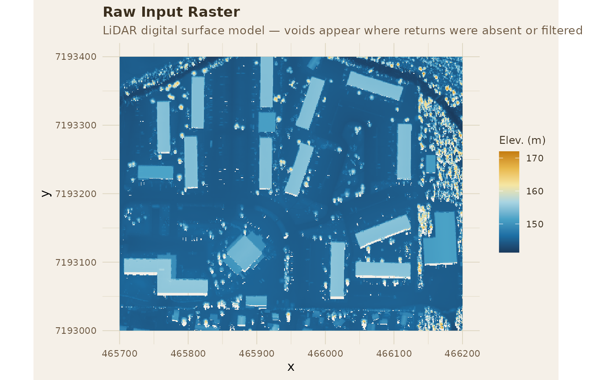
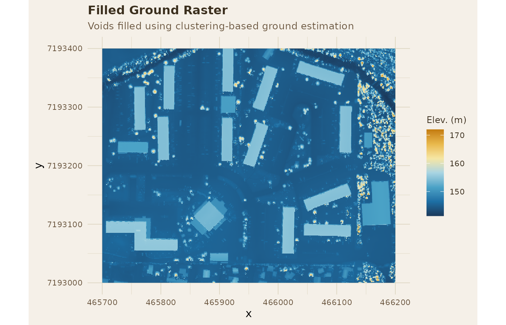
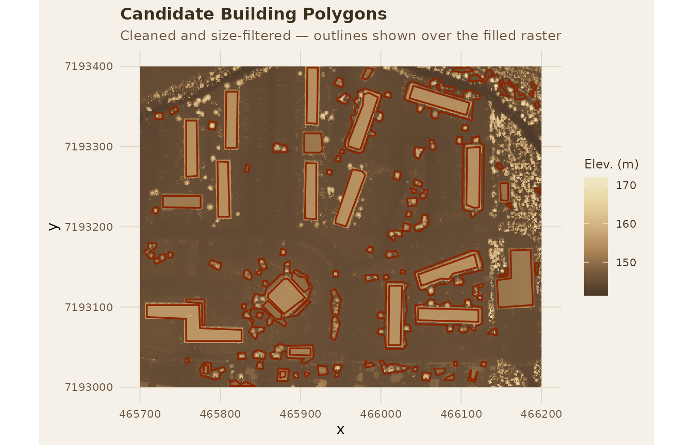
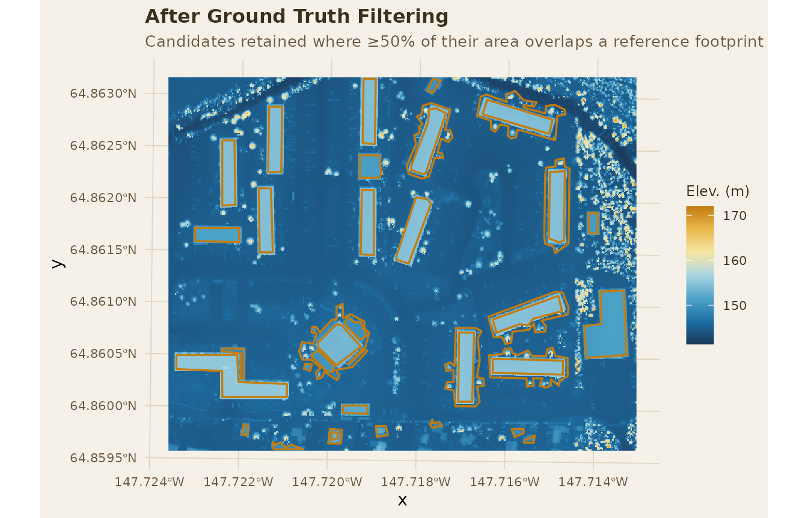
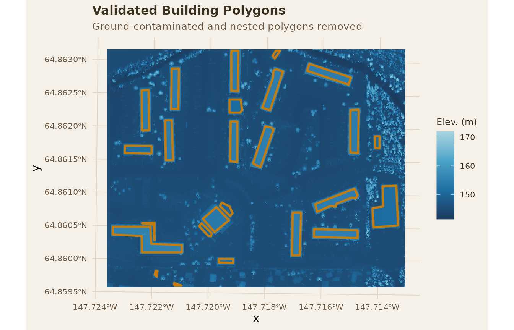

raster-polygonizer-workflow.RmdA complete workflow for extracting, filtering, and characterizing rooftop polygons from aerial elevation data
Heavy snow accumulation on rooftops is a serious safety concern in cold climates — when loads grow too large, roofs can fail catastrophically. Understanding and predicting this risk requires detailed information about building geometry across entire cities, but traditional manual surveys are slow, expensive, and limited in scale.
Airborne LiDAR (Light Detection and Ranging) offers a powerful alternative. By bouncing laser pulses off surfaces from an aircraft and recording the return time, LiDAR produces dense, precise three-dimensional maps of the built environment. Comparing scans taken before and after a snowfall event makes it possible to measure rooftop snow accumulation automatically — at city scale, for thousands of buildings at once.
rasterpolygonizer packages the full processing chain
needed to go from a raw LiDAR-derived elevation raster to a clean,
attributed set of building footprints, ready for snow load analysis,
engineering assessment, or any other rooftop-scale application.
The six functions in this package form a linear pipeline. Each step produces output consumed by the next:
| Step | Function | Purpose |
|---|---|---|
| 1 | fill_ground_raster() |
Fill voids and smooth the elevation surface |
| 2 | extract_building_edges_to_polygons() |
Detect elevation edges and close them into candidate polygons |
| 3 | clean_building_polygons() |
Shrink, simplify, and filter polygons by area |
| 4 | filter_by_ground_truth() |
Validate detections against a reference footprint layer |
| 5 | remove_invalid_polys() |
Drop polygons with insufficient raster coverage |
| 6a | estimate_building_height() |
Extract mean rooftop elevation per polygon |
| 6b | roof_slope_RANSAC() |
Fit robust planes and derive slope and aspect per roof |
Steps 6a and 6b are independent characterization steps — run either or both depending on your analysis goals.
library(ggplot2)
load_extdata <- function(filename, pkg = "rasterpolygonizer") {
path <- system.file("extdata", filename, package = pkg)
if (path == "") stop(sprintf("File '%s' not found in inst/extdata", filename))
path
}
r <- terra::rast(load_extdata("sample_raster.tif"))
b <- sf::st_read(load_extdata("sample_buildings.gpkg"), quiet = TRUE)The sample dataset covers a small area of Fairbanks, Alaska.
r is a LiDAR-derived digital surface model (DSM) — a raster
where each cell records the elevation of the highest surface at that
location, whether bare earth, a rooftop, or a tree. b
contains manually digitized building footprints used later as a
validation reference.
To keep figures consistent throughout the vignette, we define a shared ggplot theme and color scale built around earth tones — the natural palette of terrain and built surfaces in LiDAR data.
theme_rp <- function() {
theme_minimal(base_size = 11) +
theme(
plot.background = element_rect(fill = "#f5f0e8", color = NA),
panel.background = element_rect(fill = "#f5f0e8", color = NA),
panel.grid = element_line(color = "#ddd5c0", linewidth = 0.3),
plot.title = element_text(face = "bold", color = "#3b2f1e", size = 12),
plot.subtitle = element_text(color = "#6b5740", size = 10),
legend.background = element_rect(fill = "#f5f0e8", color = NA),
legend.title = element_text(color = "#3b2f1e", size = 9),
legend.text = element_text(color = "#3b2f1e", size = 8),
axis.text = element_text(color = "#6b5740", size = 8)
)
}
scale_fill_rp <- function(...) {
scale_fill_gradientn(
colors = c("#4a3728", "#7a5c3e", "#b08a5a", "#d4b483", "#e8d5a3", "#f0e8c8"),
...
)
}fill_ground_raster(raster)
LiDAR point clouds frequently contain data voids — areas where the sensor received no usable return, often under dense vegetation, at steep angles, or near flight strip edges. Left unfilled, these holes create discontinuities that interrupt edge detection downstream. This function applies spatial interpolation to fill NA cells and produce a continuous elevation surface. No tunable parameters are exposed; run it as-is before any other step.
r_df_raw <- as.data.frame(r, xy = TRUE, na.rm = TRUE)
names(r_df_raw)[3] <- "value"
ggplot(r_df_raw) +
geom_raster(aes(x = x, y = y, fill = value)) +
coord_equal() +
scale_fill_rp(name = "Elev. (m)") +
theme_rp() +
labs(
title = "Raw Input Raster",
subtitle = "LiDAR digital surface model — voids appear where returns were absent or filtered"
)
r_filled <- fill_ground_raster(r)
r_df_filled <- as.data.frame(r_filled, xy = TRUE, na.rm = TRUE)
names(r_df_filled)[3] <- "value"
ggplot(r_df_filled) +
geom_raster(aes(x = x, y = y, fill = value)) +
coord_equal() +
scale_fill_rp(name = "Elev. (m)") +
theme_rp() +
labs(
title = "Filled Ground Raster",
subtitle = "Voids have been interpolated — the surface is now continuous"
)
extract_building_edges_to_polygons(raster, thr_prob)
Buildings appear in a DSM as abrupt vertical discontinuities — places where elevation jumps sharply from ground level to rooftop height. This function detects those elevation gradients, traces their outlines, and assembles the resulting edge pixels into closed polygons.
Key parameter — thr_prob (default
0.8): The probability threshold controlling which pixels
are classified as building edges. Higher values are more conservative,
retaining only the sharpest and most obvious edges. For scenes with many
small or tightly-packed buildings, a higher thr_prob
reduces false detections from vegetation and clutter. For sparse or
large buildings where you want more complete outlines, a lower value
recovers more edge detail.
edges <- extract_building_edges_to_polygons(r_filled, thr_prob = 0.8)clean_building_polygons(closed_edges, shrink_dist, simplify_tol, min_area, max_area)
Raw edge polygons tend to be jagged and oversized — edge detection traces the outer perimeter of the gradient band, which sits just outside the true rooftop boundary. This function applies three successive cleaning operations.
shrink_dist (negative value,
e.g. -0.5): Pulls polygon edges inward by this distance in
map units, compensating for the outward bias of edge detection. Use a
more negative value when your raster has coarser resolution or when
building walls are thick relative to cell size.
simplify_tol (e.g. 2.5):
Douglas-Peucker simplification tolerance. Smooths jagged outlines
without losing the overall footprint shape. Larger values produce
simpler, blockier polygons.
min_area / max_area:
Polygons outside this size range are dropped. Set min_area
to exclude noise patches and small vegetation clumps; set
max_area to exclude large merged regions unlikely to
represent individual buildings.
buildings_sf <- clean_building_polygons(
closed_edges = edges$closed_edges,
shrink_dist = -0.5,
simplify_tol = 2.5,
min_area = 19.99,
max_area = 3000
)
r_df <- as.data.frame(r_filled, xy = TRUE, na.rm = TRUE)
names(r_df)[3] <- "value"
ggplot() +
geom_raster(data = r_df, aes(x = x, y = y, fill = value)) +
geom_sf(data = buildings_sf, fill = NA, color = "#8b2500", linewidth = 0.6) +
coord_sf() +
scale_fill_rp(name = "Elev. (m)") +
theme_rp() +
labs(
title = "Candidate Building Polygons",
subtitle = "Cleaned and size-filtered — outlines shown over the filled raster"
)
filter_by_ground_truth(buildings, reference, threshold)
Not every candidate polygon corresponds to a real building — some may be vegetation, elevated infrastructure, or detection artifacts. When a reference layer of known building footprints is available (e.g., from municipal records or manual digitizing), this function uses spatial overlap to keep only the detections that match a reference polygon. If no reference layer is available, skip this step.
Key parameter — threshold (default
0.5): The minimum fractional overlap
(intersection-over-union) required to accept a candidate as a true
detection. A value of 0.5 requires at least 50% area
overlap with a reference polygon. Lower this to recover partial matches;
raise it to require tighter geometric agreement.
# Assign a CRS to align all layers (UTM Zone 6N for Fairbanks, AK)
terra::crs(r) <- "EPSG:32606"
r_crs <- terra::crs(r)
terra::crs(r_filled) <- r_crs
buildings_sf <- sf::st_set_crs(buildings_sf, r_crs)
b <- sf::st_set_crs(b, r_crs)
filtered <- filter_by_ground_truth(
buildings_sf,
b,
threshold = 0.5
)
ggplot() +
geom_raster(data = r_df, aes(x = x, y = y, fill = value)) +
geom_sf(data = filtered, fill = NA, color = "#8b2500", linewidth = 0.6) +
coord_sf() +
scale_fill_rp(name = "Elev. (m)") +
theme_rp() +
labs(
title = "After Ground Truth Filtering",
subtitle = "Only polygons with sufficient overlap with reference footprints are retained"
)
remove_invalid_polys(buildings, raster)
Even after size and overlap filtering, some polygons may fall in areas of the raster too sparse to support reliable analysis — at flight strip edges, or where interpolation could not produce a reliable surface. This function checks raster coverage within each polygon and removes those that fall below an acceptable data density. It is a final data quality gate, requires no parameters, and should always be run before the characterization steps.
valid_polys <- remove_invalid_polys(filtered, r_filled)
ggplot() +
geom_raster(data = r_df, aes(x = x, y = y, fill = value)) +
geom_sf(data = valid_polys, fill = NA, color = "#8b2500", linewidth = 0.6) +
coord_sf() +
scale_fill_rp(name = "Elev. (m)") +
theme_rp() +
labs(
title = "Validated Building Polygons",
subtitle = "Polygons with insufficient raster coverage have been removed"
)
estimate_building_height(buildings, raster)
This function extracts the mean elevation of the raster cells within each polygon. In a normalized DSM (where ground elevation has already been subtracted), this value is building height directly. In a raw DSM, it represents absolute rooftop elevation — useful for differencing against a pre-snow scan to derive snow depth. No tunable parameters are required.
df <- estimate_building_height(valid_polys, r_filled)
knitr::kable(
head(df, 10),
digits = 2,
caption = "Estimated mean rooftop elevation for the first 10 buildings (meters)"
)| geometry | building_id | area | perim | perim_area_ratio | vertices | inside_q | outside_q | height | |
|---|---|---|---|---|---|---|---|---|---|
| 3 | POLYGON ((465880.9 7193013,… | 3 | 46.71 | 0 | 0 | 5 | 152.32 | 145.34 | 6.97 |
| 4 | POLYGON ((465784.9 7193026,… | 4 | 56.52 | 0 | 0 | 5 | 149.50 | 144.93 | 4.57 |
| 5 | POLYGON ((465886.5 7193048,… | 5 | 221.00 | 0 | 0 | 5 | 151.92 | 145.18 | 6.74 |
| 6 | POLYGON ((465708.5 7193102,… | 6 | 2326.31 | 0 | 0 | 9 | 155.17 | 145.10 | 10.08 |
| 7 | POLYGON ((465757.5 7193110,… | 7 | 179.47 | 0 | 0 | 7 | 149.44 | 145.21 | 4.23 |
| 9 | POLYGON ((465884.5 7193135,… | 9 | 1104.02 | 0 | 0 | 7 | 153.41 | 145.68 | 7.73 |
| 10 | POLYGON ((465728.5 7193238,… | 10 | 681.50 | 0 | 0 | 5 | 151.50 | 144.83 | 6.67 |
| 12 | POLYGON ((465919.5 7193279,… | 12 | 934.96 | 0 | 0 | 5 | 154.38 | 144.96 | 9.42 |
| 13 | POLYGON ((465809.5 7193281,… | 13 | 927.37 | 0 | 0 | 5 | 154.36 | 144.85 | 9.51 |
| 14 | POLYGON ((465770.5 7193332,… | 14 | 938.50 | 0 | 0 | 5 | 154.42 | 144.88 | 9.55 |
roof_slope_RANSAC(raster, buildings, n_iter, thresh, min_inliers)
Roof slope and orientation (aspect) are key determinants of snow retention — a steep south-facing roof sheds snow quickly, while a shallow north-facing roof may accumulate loads several times greater. This function fits a plane to the raster elevation values within each polygon using RANSAC (Random Sample Consensus), a robust estimation method that tolerates outlier pixels caused by dormers, vents, parapets, and sensor noise.
For each building, the algorithm randomly samples 3-point subsets, fits a plane, and counts how many of the remaining pixels (inliers) fall within a residual threshold. The plane with the most inliers wins. A stability metric — the spread of slope values across the top 5% of candidate fits — is also returned to flag geometrically ambiguous or noisy roofs.
n_iter (default 500):
Number of random plane candidates evaluated. More iterations improve
robustness at the cost of computation time. For large datasets
200 is often sufficient; for noisy or complex roofs,
1000 or more may help.
thresh (default 0.1):
Residual distance in elevation units within which a pixel counts as an
inlier. Tighten this for high-quality, dense LiDAR where you expect a
clean planar surface. Loosen it for coarser or noisier data where pixel
scatter is inherently higher.
min_inliers (default 10):
Minimum inlier pixels required to accept a plane fit. For small
buildings with few raster cells, lower this value to avoid discarding
valid detections. For large buildings, raising it ensures the fitted
plane is well-supported by data.
Interpreting slope_spread: A low value
(near 0) means the top candidate planes agreed closely on slope — the
roof is likely a clean, simple plane. A high value suggests complex
geometry or noisy data; treat that building’s slope estimate with added
caution.
buildings_sv <- terra::vect(valid_polys)
if (!"building_id" %in% names(buildings_sv)) {
buildings_sv$building_id <- seq_len(nrow(buildings_sv))
}
ransac_result <- roof_slope_RANSAC(
raster = r_filled,
buildings = buildings_sv,
n_iter = 500L,
thresh = 0.1,
min_inliers = 10L,
quiet = TRUE
)
knitr::kable(
head(ransac_result$summary_table, 10),
digits = 2,
caption = "Roof slope and aspect estimates for the first 10 buildings"
)| building_id | slope_deg | aspect_deg | n_inliers | slope_spread | top_5_percent_count |
|---|---|---|---|---|---|
| 3 | 17.42 | 94.35 | 25 | 2.42 | 11 |
| 4 | 2.89 | 173.89 | 38 | 1.65 | 11 |
| 5 | 5.01 | 180.61 | 234 | 0.56 | 18 |
| 6 | 0.41 | 203.25 | 2134 | 0.21 | 23 |
| 7 | 0.12 | 336.99 | 218 | 0.24 | 21 |
| 9 | 0.50 | 292.62 | 744 | 0.49 | 23 |
| 10 | 0.35 | 1.47 | 694 | 0.42 | 20 |
| 12 | 0.05 | 227.97 | 964 | 0.26 | 24 |
| 13 | 0.18 | 267.57 | 932 | 0.31 | 24 |
| 14 | 1.33 | 90.90 | 911 | 0.28 | 25 |
With per-building height, slope, and aspect values in hand, the natural next steps are:
All outputs are standard R objects — sf data frames and
terra rasters — and can be written to disk with
sf::st_write() and terra::writeRaster()
respectively.